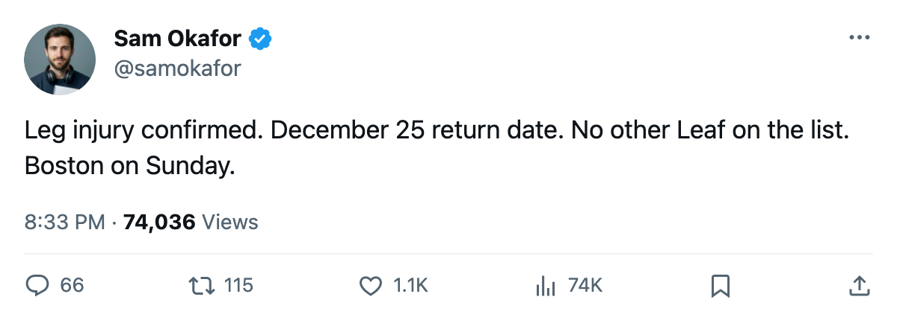

Injury Desk: Gaborik's leg keeps him out until December 25
The only Leaf on the shelf, $11.90M in the press box for 5 weeks, and Boston arrives Sunday with 2 games in hand.
 Sam OkaforLeafs beat reporter · Queen City Telegram
Sam OkaforLeafs beat reporter · Queen City Telegram
The league placed  Marian Gaborik99 on injured reserve today with a leg injury that began between November 16 and November 17, setting his return at December 25. He is the
Marian Gaborik99 on injured reserve today with a leg injury that began between November 16 and November 17, setting his return at December 25. He is the  Toronto Maple Leafs Maple Leafs' only player on the list.
Toronto Maple Leafs Maple Leafs' only player on the list.
Gaborik has 6 goals and 8 points in 17 games at 22.6 minutes a night. His 99 overall grade is the highest on the roster and the Bureau's Development Index carried him at +11 before the diagnosis, the largest upward swing on any Toronto forward. The $11.90M he carries this season is the team's largest contract by a wide margin.
The timing makes last night's loss harder to take. Toronto fell 1-2 to  Detroit Red Wings Detroit at home on November 16, ending a 6-game winning streak. Sunday brings
Detroit Red Wings Detroit at home on November 16, ending a 6-game winning streak. Sunday brings  Boston Bruins Boston, who took the season's first meeting 3-2.
Boston Bruins Boston, who took the season's first meeting 3-2.
The top line without its right wing
Gaborik held the L1RW slot beside  Mats Sundin92 (12 points, 23.1 minutes) and
Mats Sundin92 (12 points, 23.1 minutes) and  Alexander Mogilny89 (10 points, 22.6 minutes). The coaching staff has to reshuffle that side of the ice before Sunday.
Alexander Mogilny89 (10 points, 22.6 minutes). The coaching staff has to reshuffle that side of the ice before Sunday.
| Player | GP | G | A | PTS | MPG | Overall | Salary |
|---|---|---|---|---|---|---|---|
 Maxim Afinogenov86 Maxim Afinogenov86 | 18 | 6 | 6 | 12 | 18.1 | 86 | $4.50M |
 Rick Nash85 Rick Nash85 | 18 | 2 | 7 | 9 | 14.3 | 85 | $3.90M |
 Stanislav Chistov87 Stanislav Chistov87 | 18 | 5 | 4 | 9 | 17.9 | 87 | $5.00M |
 Nikita Alexeev80 Nikita Alexeev80 | 11 | 3 | 3 | 6 | 11.2 | 80 | $1.50M |
Afinogenov is the closest swap by ice time and scoring. He plays 18.1 minutes and has 12 points, and his form on the Index sits at +5 above a base of 82. Moving him up opens a hole on the second line, where Chistov (overall 87, form +8) fits naturally.
Goaltender back, forward gone
 Roberto Luongo95 is back. He has 8 starts this season and has not played since the previous stretch of games. Mikael Tellqvist73, whom the Development Index has at -5, started against Detroit and never had a chance.
Roberto Luongo95 is back. He has 8 starts this season and has not played since the previous stretch of games. Mikael Tellqvist73, whom the Development Index has at -5, started against Detroit and never had a chance.
Toronto leads the Northeast with 28 points in 18 games. Boston Bruins Boston holds 22 in 16, a 6-point gap with 2 games in hand. Sunday's meeting is the 2nd in the season series. Boston leads it 1-0.
